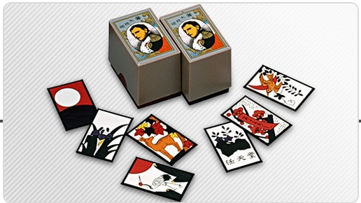
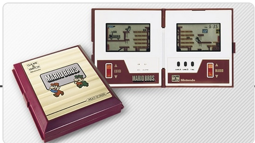
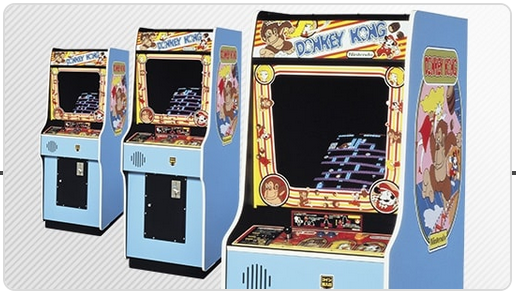
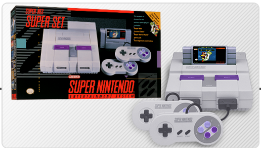
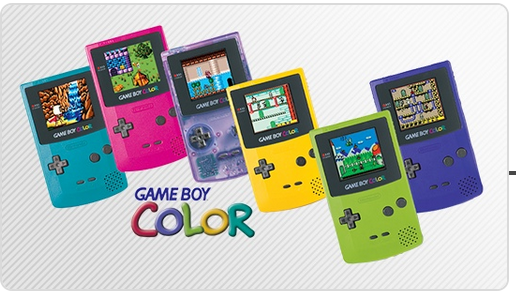
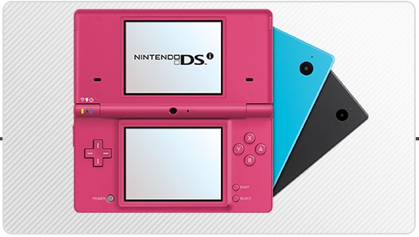

Our History
We’ve been dedicated to our mission for a long time—since 1889, in fact.
1889
Fusajiro Yamauchi began a small business manufacturing “Hanafuda” playing cards in Kyoto, Japan.
1980
Announced a wholly owned subsidiary, Nintendo of America Inc. (NOA). Started selling the Game & Watch™ product line.
1981
Developed and began distribution of the coin-operated video game Donkey Kong™. This video game quickly became the hottest selling individual coin-operated machine in the business.
1985
The Nintendo Entertainment System™ (NES™) launched in America and became a smash hit.

1985
Mario™ was first introduced in the Super Mario Bros.™ game.

1986
The character Link™ made his first appearance in the Legend of Zelda™ game for NES.

1989
Introduced Game Boy™, the first portable handheld game system. Originally bundled with the Tetris™ game, it was an instant phenomenon.

1991
The 16-bit Super Nintendo Entertainment System™ (Super NES™) was released in the U.S.
1996
The Nintendo 64™ system launched in the U.S. on Sept. 29, along with the critically acclaimed Super Mario 64™ game.

1998
Nintendo introduced Game Boy Color™. Pokémon™, a breakthrough game concept for Game Boy, was introduced to the world and generated a nationwide craze to “Catch ‘em All!”
2001
Launched the Game Boy™ Advance and the Nintendo GameCube™ systems. The Nintendo GameCube was the first Nintendo system to use optical discs instead of cartridges for its games.

2004
Launched the Nintendo DS™, an innovative, dual-screen handheld gaming system.
2006
Nintendo introduced the Wii™ system and with it several advanced features. Wireless motion-sensitive controllers, built-in Wi-Fi capability, and a host of other features made Wii the best-selling later-generation console system in the world.

2008
Wii became the first system purchased by more than 10 million Americans in a single year.

2011
The Nintendo 3DS™ system launched, letting users view and play 3D content without special 3D glasses.

2012
The Wii U™ system launched with the innovative Wii U GamePad controller that offered users new ways to play together, including off-TV. This system also introduced support for amiibo™ accessories.

2015
The Splatoon™ game launched, introducing the squid-kids known as Inklings.

2017
The Nintendo Switch™ system launched, along with hits including Super Mario Odyssey™ and The Legend of Zelda™: Breath of the Wild.

2019
The Nintendo Switch Lite system launched. Designed specifically for portable play, the compact system plays the library of Nintendo Switch games that work in handheld mode.